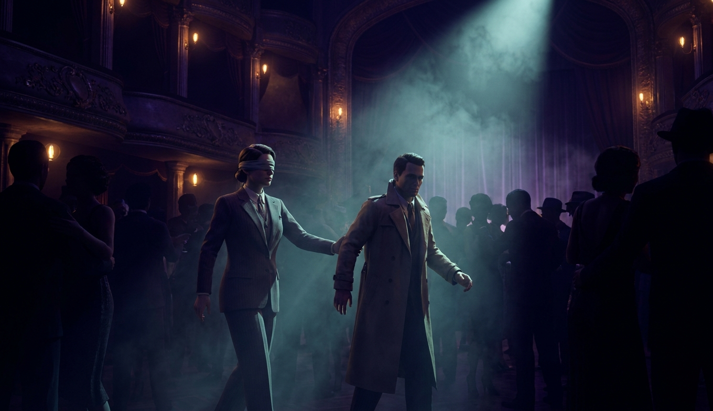
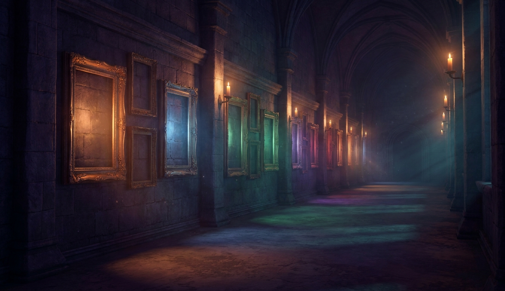
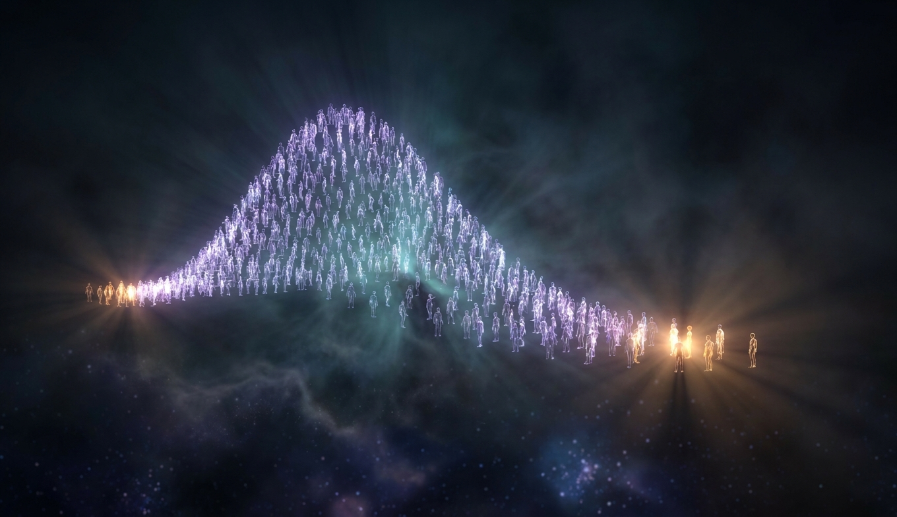
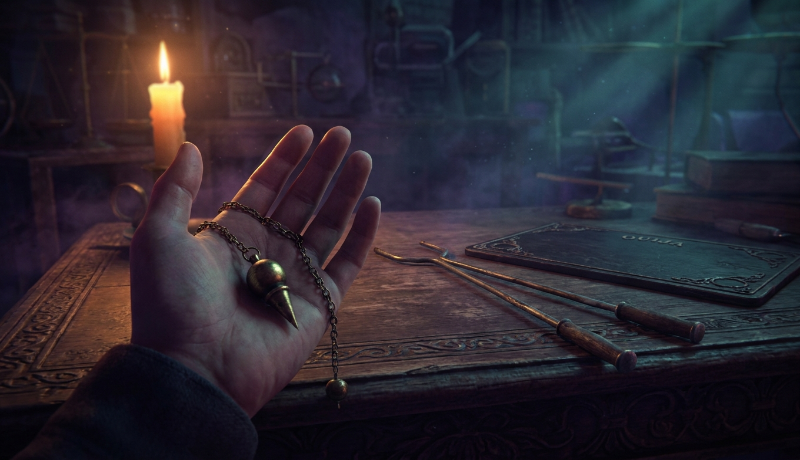
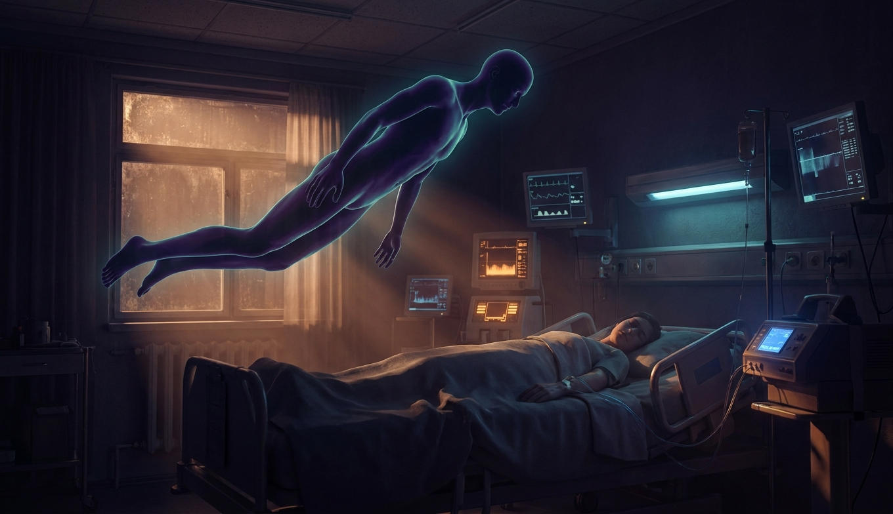
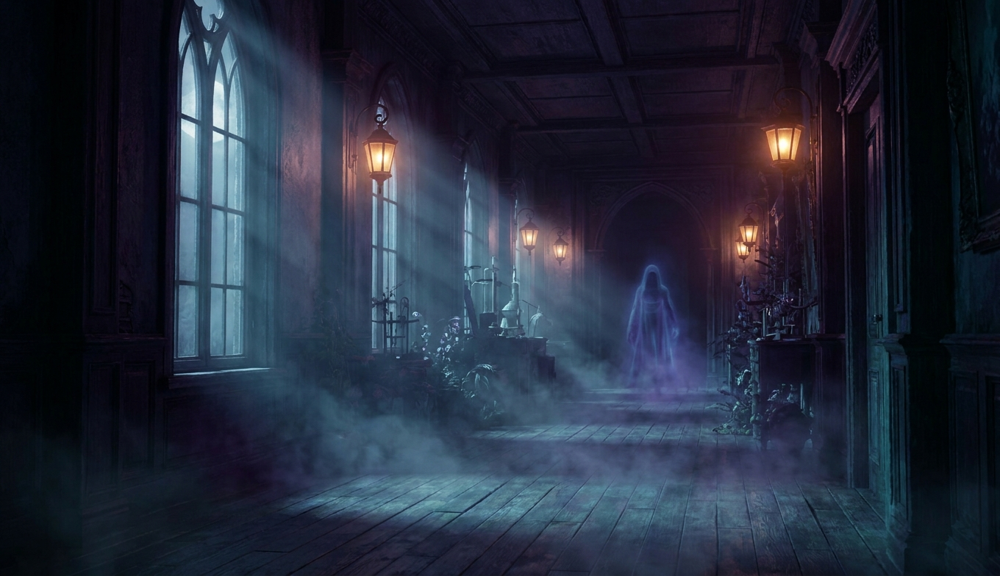
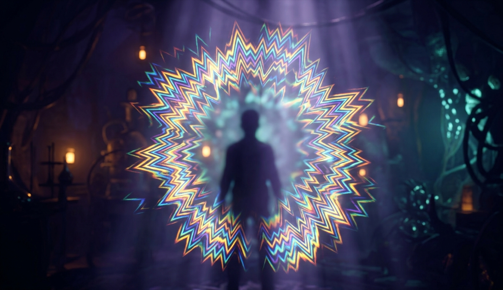
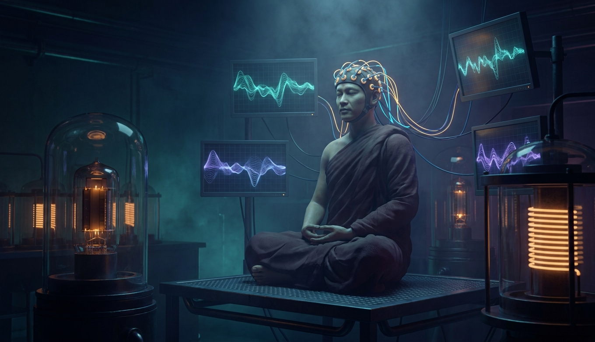
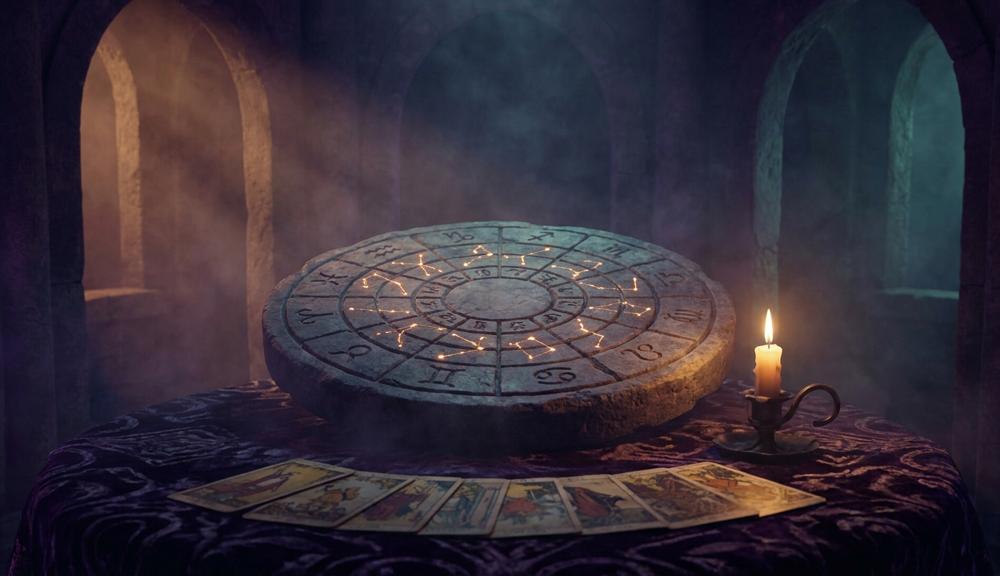
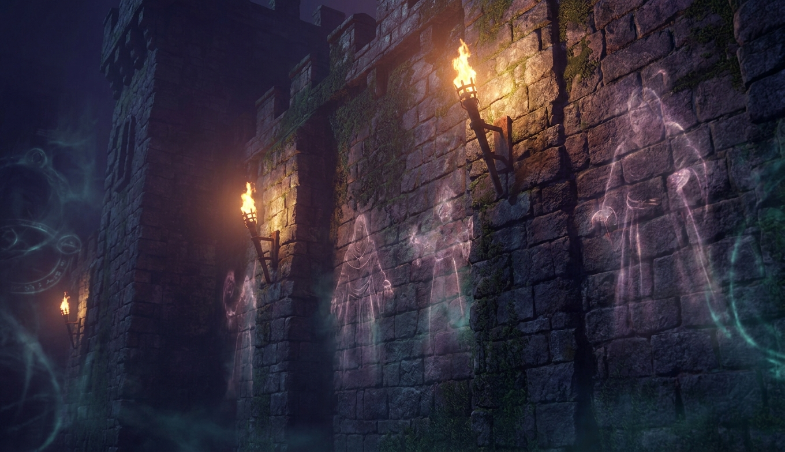

Человек с завязанными глазами ведёт зрителя через зал и находит спрятанную булавку. Зал уверен, что видел телепатию. На сцене работало кое-что интереснее: тело зрителя, которое само всё рассказало.

От Калиостро до Кашпировского. Формат один: что делал, что заявлял, что показала проверка, какой механизм. Двое из четырнадцати до конца не закрыты, и это сказано прямо.

Случайность, нейроразнообразие, эволюция или деградация, а может, мир растит себе наблюдателя. Четыре ответа, и три из них - наука, а четвёртый - честно помечен как разговор под пиво.

Маятник качается сам, лоза дёргается над водой, планшетка спиритической доски пишет имена. Всё это делает твоя рука, и она тебе об этом не докладывает.

Десять процентов людей хотя бы раз видели себя со стороны. Каждый пятый переживший остановку сердца рассказывает о свете и покое. С 2002 года это включается кнопкой, и всё равно остаётся один вопрос без ответа.

Фигура у кровати, которая давит и не даёт дышать. Холод и «кто-то за спиной» в старом доме. Дом, где семья видела призраков каждую ночь - и их видел даже врач. У каждого есть механизм, и у некоторых он опасен по-настоящему.

Свечение вокруг человека, «я здесь уже был», сон про звонок перед звонком и «я знал, что он врёт». Четыре разных механизма, и все четыре - штатные.

Плацебо, которое снимает боль опиоидами. Гипноз, при котором делают операции. Монахи, у которых на ЭЭГ гамма-ритм, и тибетцы, греющие себя на морозе. Птицы с квантовым компасом в глазу. Здесь чудо есть, только оно устроено иначе, чем обещали.

Самый большой рынок эзотерики и самая изученная её часть. Не работает как предсказание, работает как разговор, и это стоит понимать, а не высмеивать.

Помнят ли стены? Куда деваются события? Если информация не исчезает, то Вселенная - запись, а кто её читает? Последняя глава - там, где наука доходит до края и честно говорит, что дальше начинаемся мы.
Мессинг был прав в главном: он обычный человек с необычной настройкой. Не потому, что читал энергию, а потому что его мозг пропускал больше, чем наш, и не объяснял ему, откуда. Он придумал объяснение из инструментов своего времени, как Ньютон с алхимией и как мы с «энергией» и «полем».